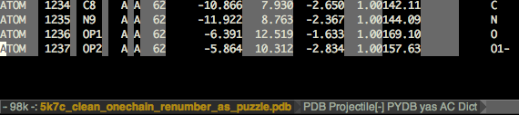
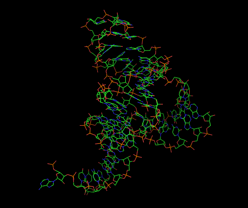

rna-tools
Why do you need this?
Created by Marcin Magnus (m.magnus@cent.uw.edu.pl)
rna_pdb_toolsx.py
Too many PDB "formats"?
ATOM 1 P C A 1 -29.720 -19.750 3.190 1.00183.16 P
ATOM 2 OP1 C A 1 -28.490 -20.280 2.531 1.00180.35 O
ATOM 3 OP2 C A 1 -29.638 -18.728 4.275 1.00185.39 O
ATOM 4 O5' C A 1 -30.685 -20.928 3.695 1.00186.30 O
ATOM 5 C5' C A 1 -30.499 -22.286 3.303 1.00184.69 C
ATOM 6 C4' C A 1 -31.442 -22.699 2.192 1.00181.85 C
ATOM 7 O4' C A 1 -32.682 -21.940 2.275 1.00182.04 O
ATOM 8 C3' C A 1 -30.946 -22.434 0.779 1.00174.44 C
ATOM 9 O3' C A 1 -30.025 -23.403 0.309 1.00171.18 O
run rna-pdb-tools.py --get_rnapuzzle_ready to get your structures in RNA-Puzzle ready format
rna_pdb_toolsx.py
get info on missing atoms
$ rna-pdb-tools.py --get_rnapuzzle_ready 5k7c_clean_onechain_renumber_as_puzzle_rpr.pdb
HEADER Generated with rna-pdb-tools
HEADER ver 61003e1-dirty
HEADER https://github.com/mmagnus/rna-pdb-tools
HEADER Fri Oct 7 17:27:50 2016
REMARK 000 Missing atoms:
REMARK 000 + O2' A Residue G het= resseq=57 icode= residue # 53
ATOM 1 P C A 1 -29.720 -19.750 3.190 1.00183.16 P
ATOM 2 OP1 C A 1 -28.490 -20.280 2.531 1.00180.35 O
ATOM 3 OP2 C A 1 -29.638 -18.728 4.275 1.00185.39 O
ATOM 4 O5' C A 1 -30.685 -20.928 3.695 1.00186.30 O
ATOM 5 C5' C A 1 -30.499 -22.286 3.303 1.00184.69 C
rna_pdb_toolsx.py
$ struc for i in `ls *.pdb`;
do rna-pdb-tools.py --get_rnapuzzle_ready $i > ${i/.pdb/_rpr.pdb};
done
$ struc head *
==> 17_Bujnicki1.pdb <==
ATOM 1 O5' C A 1 22.073 10.765 62.912 1.00 0.00
O
ATOM 2 C5' C A 1 22.338 11.788 61.950 1.00 0.00
C
ATOM 3 C4' C A 1 21.346 12.915 62.095 1.00 0.00
C
ATOM 4 O4' C A 1 22.036 14.076 62.633 1.00 0.00
O
ATOM 5 C1' C A 1 21.546 15.251 62.014 1.00 0.00
C
==> 17_Bujnicki1_rpr.pdb <==
HEADER Generated with rna-pdb-tools
HEADER ver dc80780-dirty
HEADER https://github.com/mmagnus/rna-pdb-tools
HEADER Sun Oct 16 01:26:32 2016
ATOM 1 P C A 1 24.552 11.248 60.616 1.00 11.89 P
ATOM 2 OP1 C A 1 24.122 9.842 60.420 1.00 14.35 O
ATOM 3 OP2 C A 1 25.338 11.941 59.582 1.00 12.68 O
ATOM 4 O5' C A 1 23.306 12.183 60.921 1.00 10.34 O
ATOM 5 C5' C A 1 22.338 11.788 61.950 1.00 0.00 C
ATOM 6 C4' C A 1 21.346 12.915 62.095 1.00 0.00 C
rna_pdb_toolsx.py
$
rna-pdb-tools.py -h
usage: rna-pdb-tools.py ver: 37c5b4e-dirty [-h] [-r] [-c]
[--get_chain GET_CHAIN] [--get_seq]
[--rosetta2generic]
[--get_rnapuzzle_ready] [--no_hr]
[--renumber_residues]
[--get_simrna_ready] [--edit EDIT]
[--delete DELETE]
file
positional arguments:
file file
optional arguments:
-h, --help show this help message and exit
-r, --report get report
-c, --clean get clean structure
--get_chain GET_CHAIN
get chain, .e.g A
--get_seq get seq
--rosetta2generic convert ROSETTA-like format to a generic pdb
--get_rnapuzzle_ready
get RNApuzzle ready (keep only standard atoms,
renumber residues)
--no_hr do not insert the header into files
--renumber_residues
--get_simrna_ready
--edit EDIT edit 'A:6>B:200', 'A:2-7>B:2-7'
--delete DELETE delete the selected fragment, e.g. A:10-16
if args.get_rnapuzzle_ready:
s = RNAStructure(args.file)
s.decap_gtp()
s.fix_resn()
s.remove_hydrogen()
s.remove_ion()
s.remove_water()
s.fix_op_atoms()
s.renum_atoms()
#print s.get_preview()
#s.write(args.outfile)
if not args.no_hr:
add_header()
s.get_simrna_ready(args.renumber_residues)
print s.get_text()
if args.renumber_residues:
s = RNAStructure(args.file)
s.remove_hydrogen()
s.remove_ion()
s.remove_water()
s.get_simrna_ready(args.renumber_residues)
s.renum_atoms()
if not args.no_hr:
add_header()
print s.get_text()
diffpdb

# of atoms
Calc rmsd
(clusters/pistol_thrs0.50A_clust01-000001_AA.pdb)
time rna_calc_rmsd.py \
-t 5k7c_clean_onechain_renumber_as_puzzle_srr.pdb \
--target_selection A:1-48+52-63 \
--model_selection A:1-48+52-63 \
--model_ignore_selection A/57/O2\' \
clusters/pistol_thrs0.50A_clust01-000001_AA.pdb
rna_calc_rmsd
--------------------------------------------------------------------------------
target_selection: A:1-48+52-63
model_selection: A:1-48+52-63
target_ignore_selection: A/57/O2'
model_ignore_selection:
# of models: 1
fn,rmsd_all
pistol_thrs0.50A_clust01-000001_AA.pdb,7.596
# of atoms used: 1237
csv was created! rmsds.csv
Calculate RMSD
Calc rmsd
(clusters/*_AA.pdb) srs = SimRNA ready
time rmsd_calc_to_target.py
-t 5k7c_clean_onechain_renumber_as_puzzle_srr.pdb
--target_selection A:1-48+52-63
--model_selection A:1-48+52-63
--target_ignore_selection A/57/O2\'
clusters/*_AA.pdb
rmsd_calc_rmsd_to_target
--------------------------------------------------------------------------------
target_selection: A:1-48+52-63
model_selection: A:1-48+52-63
target_ignore_selection: A/57/O2'
model_ignore_selection:
# of models: 801
fn,rmsd_all
pistol_thrs0.50A_clust01-000001_AA.pdb,7.596
pistol_thrs0.50A_clust02-000001_AA.pdb,7.766
pistol_thrs0.50A_clust03-000001_AA.pdb,18.171
[..]
pistol_thrs0.50A_clust799-000001_AA.pdb,5.356
pistol_thrs0.50A_clust800-000001_AA.pdb,15.282
pistol_thrs0.50A_clust801-000001_AA.pdb,16.339
# of atoms used: 1237
csv was created! rmsds.csv
rmsd_calc_to_target.py -t 5k7c_clean_onechain_renumber_as_puzzle_srr.pdb
37.93s user 1.07s system 87% cpu 44.650 total
RNA filter
$ rna_filter.py -r restraints_fn -s *.pdb -v
python rna_filter.py -r restraints.txt -s test_data/CG.pdb -v
(d:A1-A2 < 10.0 1)|(d:A2-A1 <= 10 1)
restraints [('A1', 'A2', '<', '10.0', '1'), ('A2', 'A1', '<=', '10', '1')]
test_data/CG.pdb
mb for A1 [ 54.729 28.9375 41.421 ]
mb for A2 [ 55.3425 35.3605 42.7455]
d:A1-A2 6.58677550096
d:A2-A1 6.58677550096
Class: SimRNATrajectory
s = SimRNATrajectory()
s.load_from_file('8b2c1278-ee2f-4calust01.trafl')
for f in s.frames:
print f.header
print f.coords
r = f.residues[0]
for r in f.residues:
print r
print r.get_atoms()
print r.p
print r.c4p
print r.c4p.get_coord()
print r.c4p - r.p
print r.n1n9
print r.b2
print r.get_center()
$ rna_filter.py -r restraints_fn -t simulation.trafl
python rna_filter.py -r restraints.txt -t test_data/CG.trafl -v
(d:A1-A2 < 10.0 1)|(d:A2-A1 <= 10 1)
restraints [('A1', 'A2', '<', '10.0', '1'), ('A2', 'A1', '<=', '10', '1')]
Frame #1 e:1252.26
mb for A1 [ 54.729 28.9375 41.421 ]
mb for A2 [ 55.3425 35.3605 42.7455]
d:A1-A2 6.58677550096
mb for A2 [ 55.3425 35.3605 42.7455]
mb for A1 [ 54.729 28.9375 41.421 ]
d:A2-A1 6.58677550096
Speed
Python object-oriented implementation. Q: 500mb file with 80k frames in about ...
...
80041
d:A1-A2 4.39878486062
d:A2-A1 4.39878486062
./rna_filter.py -r restraints.txt -t ~/work/simrna_pistol_trafl/pistol.trafl
115.25s user 6.34s system 93% cpu 2:10.60 total
~2min
PyMOL4RNA
example: the Pistol ribozyme
(RNA Puzzle #17)
PyMOL rpPyMOL rp17
def rp17():
txt ="""color forest, resi 1-5+12-16; # p1
color magenta, resi 6-11+34-39
color grey, resi 17-24
..."""
color_by_text(txt)
PyMOL drawing
x1, y1,z1 = 54.729, 28.9375, 41.421
x2, y2,z2 = 55.342, 35.3605, 42.745
draw_dist(x1,y1,z1,x2,y2,z2)

x1, y1,z1 = 54.729, 28.9375, 41.421
x2, y2,z2 = 55.342, 35.3605, 42.745
draw_vector(x1,y1,z1,x2,y2,z2) # colored from blue to red

x, y,z = 55.342, 35.3605, 42.745
radius = .1
draw_circle(x,y,z,radius)